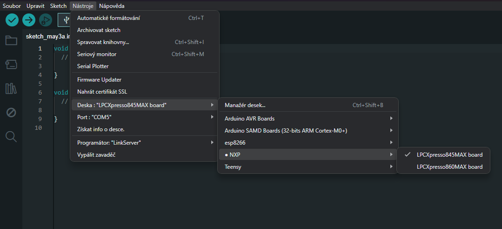
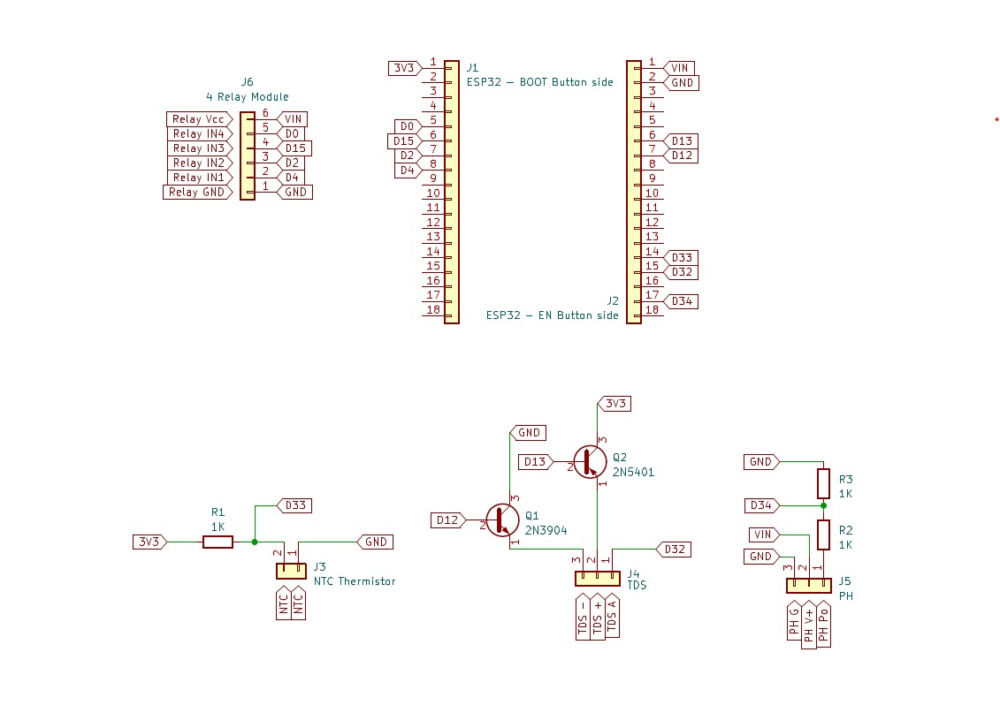
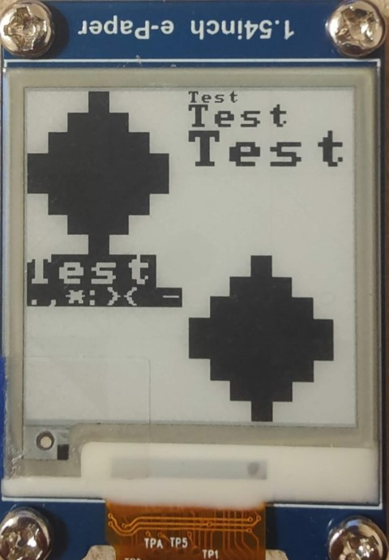
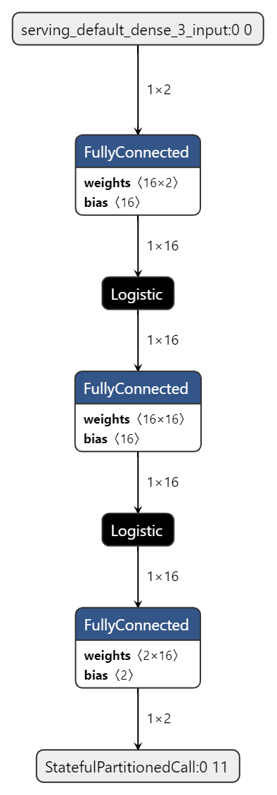

Ing. Jan Tomeček
Absolvent fakulty informačních technologií VUT v Brně
Jsem absolvent, který hledá první pracovní zkušenosti. Práce s mikrokontrolery a senzory mě bavila už před nástupem na vysokou školu. Ve většině případů jsem vytvářel spíše malé projekty, ale během studia jsem pracoval i na větších projektech. Zkušenosti mám s deskami od Arduino, ESP a NXP. Největším projektem byla má diplomová práce, ve které jsem vytvořil podpůrný balík pro vybrané mikrokontrolery od společnosti NXP do vývojového prostředí Arduino IDE.
Umím pracovat v týmu, kromě zkušeností ze školních týmových projektů také 10 let závodně tancuji v týmových kategoriích. Umím vést i tým, několik let jezdím jako hlavní vedoucí na jeden z největších dětských táborů v České Republice, kde mám na starosti tým 25 lidí.
Vzdělání
Fakulta informačních technologií VUT v Brně
Magisterské studium - Vývoj aplikací
Diplomová práce - Podpora mikrokontrolerů NXP ve vývojovém prostředí Arduino IDE
2022 - 2024
Fakulta informačních technologií VUT v Brně
Bakalářské studium
Bakalářská práce -- Na simulaci založený vývoj systému řízení distribuce tepla
2019 - 2022
Gymnázium Olomouc - Hejčín
Angličtina B2
2015 - 2019
Projekty
Diplomová práce

Diplomová práce na téma - Podpora mikrokontrolerů NXP ve vývojovém prostředí Arduino IDE.
Vytvoření podpůrného balíku pro vybrané mikrokontrolery od společnosti NXP.
Implementována kompletní podpora pro mikrokontroler LPCXpresso845 MAX a
částečná podpora pro mikrokontroler LPCXpresso860 MAX.
ESPHome-Hydroponics

This project was made as a semestral project to the subject: Distributed systems
Faculty: Information technology
Institution: Brno University of Technology
Team:
xbedna72
xtomec09
xhakto01
Knihovna pro E-ink diplay
Knihovna pro e-ink display s podporou pro základní grafické funkce. Projekt do předmětu NAV.
Senzorický modul s platformou ESP32
Senzorický modul s platformou ESP32, který dokáže zaznamenávat teplotu a vlhkost. Dále implementuje edge computing s využitím jednoduchého modelu neuronové sítě.
Dovednosti
- C, Python, Javascript, HTML, CSS
- Git
- MCUXpresso, Arduino, Espressif IDF
- Angličtina B2, Čeština
Umím pracovat v týmu, kromě zkušeností ze školních týmových projektů také 10 let závodně tancuji v týmových kategoriích. Umím vést i tým, několik let jezdím jako hlavní vedoucí na jeden z největších dětských táborů v České Republice, kde mám na starosti tým 25 lidí.